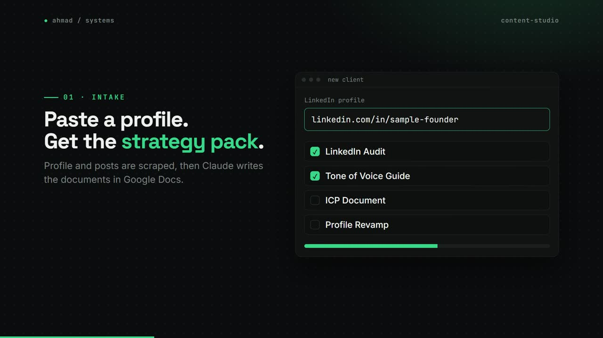
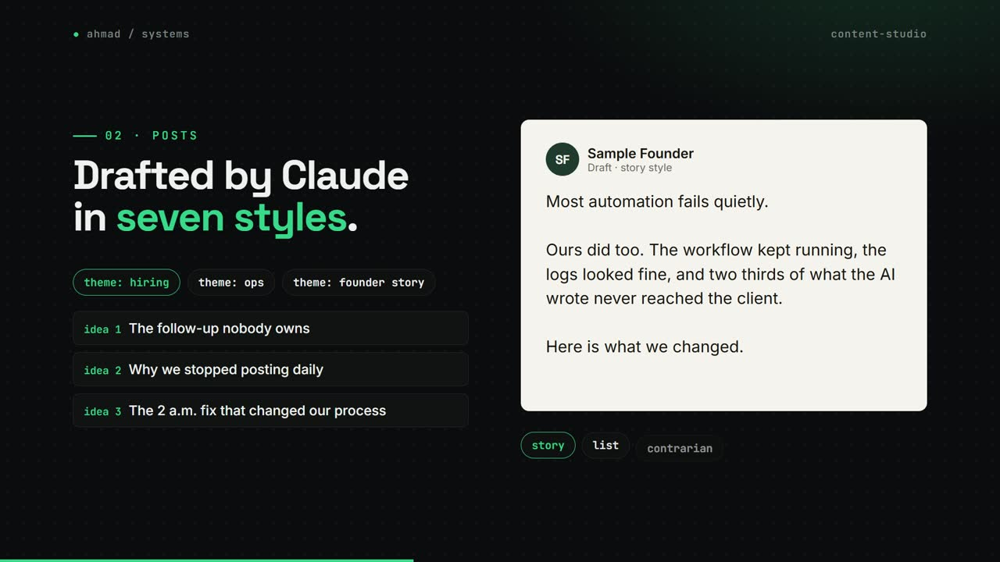
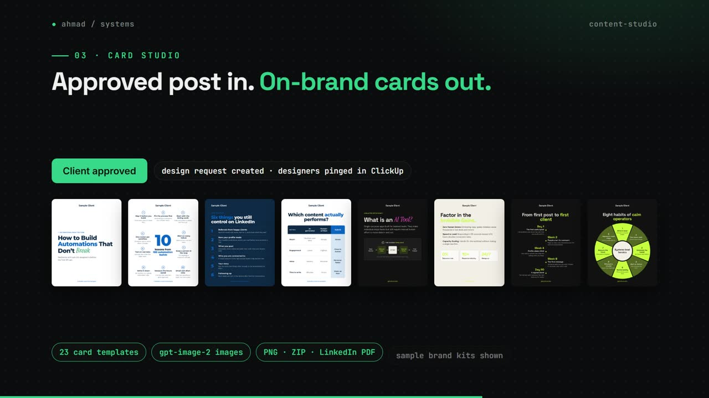
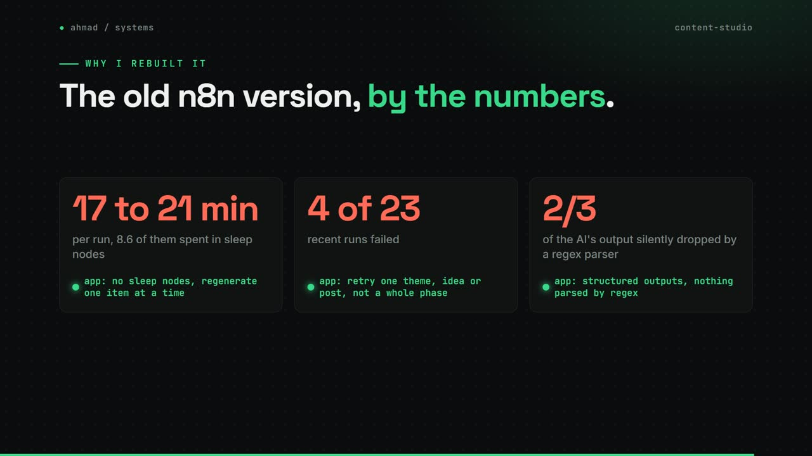

Soch Content Studio
The app Soch's team uses to run LinkedIn for founder clients, from first audit to designed post.
my role Designed and built it: 311 of 363 commits. Deployed on Railway.
The problem
Running a founder's LinkedIn took a strategist, a writer and a designer, held together by an n8n workflow. That workflow took 17 to 21 minutes per run, 4 of its last 23 runs failed, and its parser silently dropped two thirds of what the AI wrote.
How it works
- Intake scrapes the founder's profile and posts, then writes the LinkedIn audit, tone of voice, ICP and profile revamp documents in Google Docs.
- The team picks from 30 themes and their ideas, and Claude drafts posts in seven styles.
- Every post passes four gates: a claim check, the writer, a code scanner for robotic AI phrasing, and a voice editor.
- A client-approved post becomes a design request. Card Studio fills on-brand cards from 23 templates, and gpt-image-2 makes post images.
- Each weekday it drafts comments for the founder under posts by creators their buyers follow.
- Onboarding turns 11 deliverables into up to 127 dated ClickUp tasks.
What changed
- 17 to 21 minper run in the old n8n version
- 4 of 23old runs that failed
- 2/3of AI output the old parser lost
- 127dated ClickUp tasks from one onboarding
- 23Card Studio templates
- 44offline test suites
What I built
- The whole Next.js and TypeScript app, with Google Sheets, Drive and Docs as the data layer.
- The four-gate writing pipeline using structured outputs, prompt caching and web search.
- Card Studio and the image generation flow: Claude picks one of 24 visual briefs and writes the prompt for gpt-image-2; cards render with Satori and Sharp.
- Per-client cost tracking with a hard spend cap, and 44 offline test suites.
Stack
- Next.js
- TypeScript
- Claude API
- gpt-image-2
- Satori
- Sharp
- Google Sheets API
- ClickUp API
- Apify
- Railway
Stills



